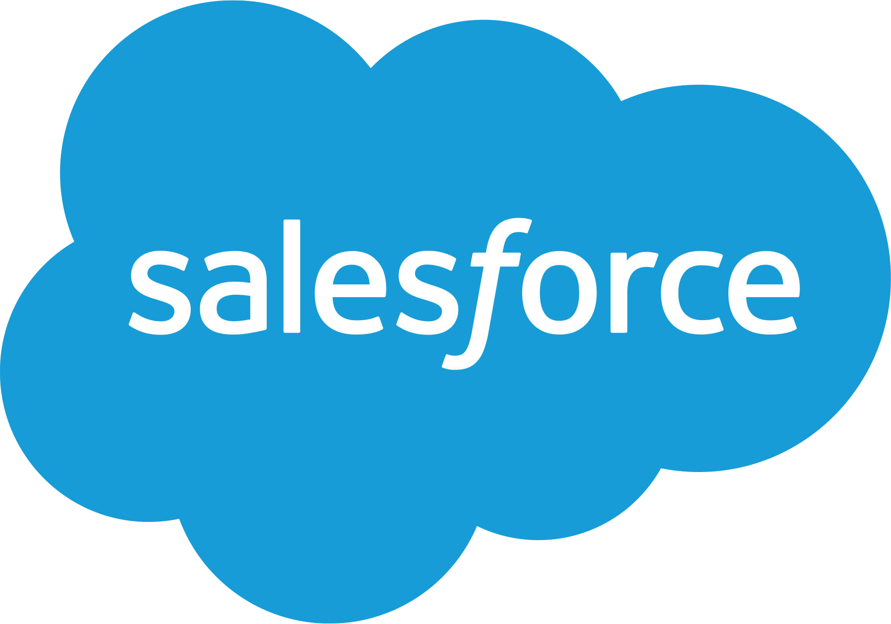

Résumé
Jamila A. Moses
Senior Solutions Engineer · Salesforce
Agentic AI Solutioning
Enterprise Pre-Sales
Technical Storytelling
Community & Mentorship
Experience

Senior Solutions Engineer, CoreSalesforce
- Drive $4M+ in annual pipeline across a high-velocity territory, executing rapid discovery-to-demo cycles spanning Sales Cloud, Service Cloud, Agentforce, Data Cloud, and Slack.
- Contribute to team quota attainment of 110%+ by executing scalable, repeatable SE motions aligned to SMB buying patterns, compressing time-to-close through strong technical qualification and demo execution.
- Leverage agentic coding tools (Claude Code, Cursor) to prototype customer-specific POCs and Agentforce agent demos in 48 to 72 hours, enabling same-week technical validation during fast-moving sales cycles.
- Build reusable discovery frameworks, solution POV templates, and demo canvases adopted as team best practices, increasing SE coverage efficiency across a broad, high-volume account set.
Senior Sales Engineer, EnterpriseClari
- Supported $8M+ in annual enterprise deals pipeline by delivering strategic demos and aligning AI-driven forecasting solutions with enterprise revenue goals.
- Cultivated relationships with Product, Customer Success, and Sales stakeholders to align GTM strategies with enterprise needs, contributing to a 15% increase in upsell opportunities.
Lead Sales EngineerCollibra
- Designed and led data governance and data quality demonstrations for 30+ enterprise customers, articulating the business value of intelligent data governance and contributing to a 25% increase in average deal size.
- Surpassed 135% of annual ARR targets and supported 92% customer renewal, partnering with Product and Marketing on GTM strategy and product roadmap inputs to align post-sales motion with company growth goals.
- Spearheaded GTM strategy with Product and Marketing teams to develop the product roadmap and post-sales needs, ensuring alignment with company goals and enhancing overall project success.
Core Solutions EngineerSalesforce
- Contributed to $1.5M in revenue across 15+ deals with mid-commercial accounts by leading storytelling-driven live demos and providing technical expertise across multi-cloud Salesforce offerings, contributing to a 15% increase in retention rates among key accounts.
- Spearheaded sales enablement initiatives including training materials, custom collateral, and RFP support, driving a 20% increase in sales team productivity.
Education
Georgia Institute of Technology · Scheller College of Business
Master of Business Administration — TI:GER Fellow, Strategy & Innovation Concentration
Georgia Institute of Technology (AUC Dual Degree Engineering Program)
B.S. Industrial & Systems Engineering — Supply Chain Concentration
Spelman College (Atlanta University Center Dual Degree Engineering Program)
B.S. Mathematics
Skills & Certifications
Certifications
Project Management Professional (PMP)
Salesforce Certified Agentforce Specialist
Salesforce Certified Administrator
Salesforce Certified App Builder
Platforms & Tools
Salesforce Cloud Suite
Slack
Microsoft Azure
AWS
GCP
Claude Code
Cursor
SAP
SQL
JIRA
Google Suite
Microsoft Office Suite
Strengths
Enterprise Pre-Sales Strategy
Agentic AI Solutioning
Executive Stakeholder Engagement
Discovery & Requirements Gathering
Technical Storytelling
Cross-Functional Orchestration
Effective Public Speaking
Project Management
Process Improvement